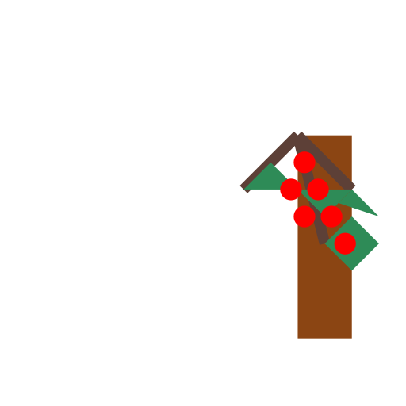
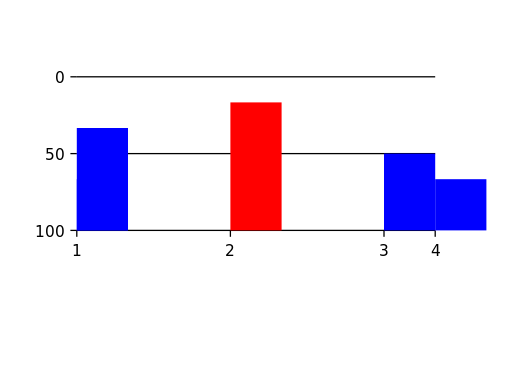
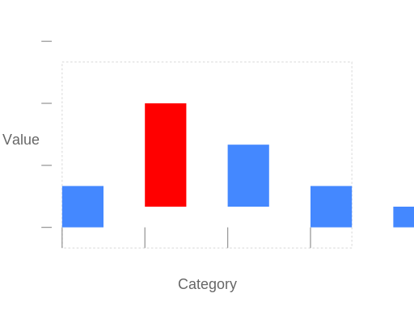
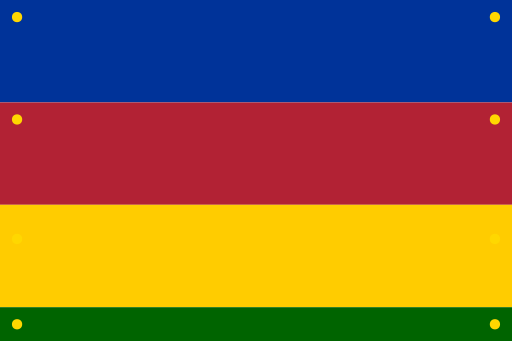

Top 128 neurons per layer
Use directions measured on base-model loops.
An experiment in weight-space programming
Can an AI agent program a 2B model by editing its weights directly?
GPT-6.2 Sol in Devin examined Qwen3.5-2B, found a direction associated with repetition, and edited the weights that write to it. No gradient descent. No training. The same prompts and decoding.
Each prompt asked for complete SVG code with exact visual constraints. The parameters were randomized: 100 held-out test prompts and 30 separate dev prompts per task, with different seeds. The editor saw only dev prompts and their outputs.
Qwen3.5-2B ran in vLLM on a Modal A100-40GB with greedy decoding and non-thinking chat mode. Base and edited weights went through the same pipeline.
Separate LLM judges saw the PNG, the requirement and a hashed item ID. They did not see the SVG source or model identity and were asked to judge by eye. No renderable SVG meant an incorrect answer.
At an element boundary, the model can start another shape or close the SVG. In a degenerate loop it keeps opening shapes, sometimes until the 4096-token cap. Without a closing tag, there is nothing to render.
Renderable outputs rose from 424 to 494. Generated tokens fell from 648k to 403k (−38%).
The agent replayed dev generations teacher-forced: instead of sampling, it fed back the existing tokens and recorded the residual stream. It compared element boundaries after loop onset with those in finished generations.
Subtract the means, then normalize. The separation grew with depth; the edit targeted layers 15, 17, 19, 21, 23. The dots are illustrative, not measured activations.
Rank MLP neurons by |u · w| weighted by activation magnitude. For each selected down_proj column, remove only its component along u. The subtraction is rank one.
Use directions measured on base-model loops.
Re-measure on loops that survived round 1. At layer 23, cosine similarity to the original direction was 0.19.
0.073% of the model, across five matrices. No hooks remain at inference.
Devin had an authenticated HTTP API to a live Python kernel holding the eager vLLM model on an A100. The agent inspected weights, used temporary hooks, screened edits on teacher-forced text, then generated and scored its own dev images.
| Edit | Description | Weights | Building | Apple | Circle | Bar | Flag | Total |
|---|---|---|---|---|---|---|---|---|
| Base | — | 0 | 21 / 4 | 14 / 0 | 30 / 7 | 30 / 13 | 29 / 3 | 124 / 27 |
| E1 | Round 1 · L15, 17, 19, 21 · top 64 | 503,134 | 21 / 3 | 30 / 12 | 30 / 5 | 30 / 9 | 29 / 2 | 140 / 31 |
| E2 | Round 1 · L15, 17, 19, 21, 23 · top 128 | 1,253,339 | 25 / 3 | 30 / 20 | 30 / 5 | 30 / 14 | 29 / 2 | 144 / 44 |
| E3 | Round 1 · odd L11–23 · top 128 | 1,752,892 | 24 / 2 | 30 / 12 | 30 / 6 | 30 / 13 | 29 / 2 | 143 / 35 |
| E4 | E2 + re-measured direction · top 64 | 1,622,668 | 30 / 3 | 28 / 11 | 30 / 8 | 30 / 13 | 28 / 4 | 146 / 39 |
| E5 | E2 + re-measured direction · top 32 | 1,370,750 | 30 / 2 | 30 / 10 | 30 / 10 | 30 / 19 | 30 / 5 | 150 / 46 |
E5 was the only variant that rendered all 150 dev outputs, and it had the most correct. In the normal-text screen, NLL went from 0.0582 to 0.0606 and greedy agreement from 0.989 to 0.987. The agent saved E5 as a sparse patch; a separate Modal function applied it to fresh base weights for testing.
We scored the same 500 unseen prompts under two judging protocols. Independent judges saw one condition at a time; paired-blind judges saw both conditions shuffled together for their task, without knowing which was which.
Base Edited
Correct out of 100
On the same prompt
Exact McNemar tests these two directions of change.
| Task | Base | Edit | Fixed | Broken | Exact p |
|---|---|---|---|---|---|
| Building | 4 | 2 | 2 | 4 | 0.6875 |
| Apple tree | 11 | 33 | 28 | 6 | 1.9512558355927467 × 10−4 |
| Circle grid | 38 | 58 | 23 | 3 | 8.797645568847656 × 10−5 |
| Bar chart | 35 | 54 | 22 | 3 | 1.5652179718017578 × 10−4 |
| Flag | 0 | 0 | 0 | 0 | 1 |
| Total | 88 | 147 | 75 | 16 | 2.6517165568743947 × 10−10 |
| Task | Base | Edit | Fixed | Broken | Exact p |
|---|---|---|---|---|---|
| Building | 5 | 4 | 3 | 4 | 1 |
| Apple tree | 12 | 33 | 27 | 6 | 3.240634687244892 × 10−4 |
| Circle grid | 21 | 29 | 10 | 2 | 0.03857421875 |
| Bar chart | 40 | 54 | 18 | 4 | 0.004343509674072266 |
| Flag | 0 | 0 | 0 | 0 | 1 |
| Total | 78 | 120 | 58 | 16 | 9.674891137601899 × 10−7 |
Handpicked to show a recovered render, a corrected chart, and a failure that stayed a failure. Verdicts shown are from independent judging.




The edit transferred to unseen prompts. It recovered many renders, especially apple trees, and may have reduced extra shapes on charts and grids. It did not solve exact window-and-floor counts or produce correct flags.
A small edit suppressed a behavior with a clear linear signature.
Buildings stayed at 2–5% correct across protocols; flags stayed at 0%.
From the repository root
These commands reproduce the inference and scoring workflow, not the editor’s search. For new scores, have judges fill the image-only packs before running the scoring commands.
modal deploy wsp/kernel.py
python wsp/tasks.py
python -m wsp.pipeline generate --model base --split test
# In the live kernel: execute edits/final_edit.py
# Save it via POST /save_patch {"name":"final"}
python -m wsp.pipeline generate --model final --split test
python -m wsp.verify_pack base test
python -m wsp.verify_pack final test
python -m wsp.verify_pack_paired base final
# Collect image-only judgments for each pack, then:
python -m wsp.score base test verify/base_test/judgments
python -m wsp.score final test verify/final_test/judgments
python -m wsp.score_paired
python -m wsp.agreement
python -m wsp.tables base final